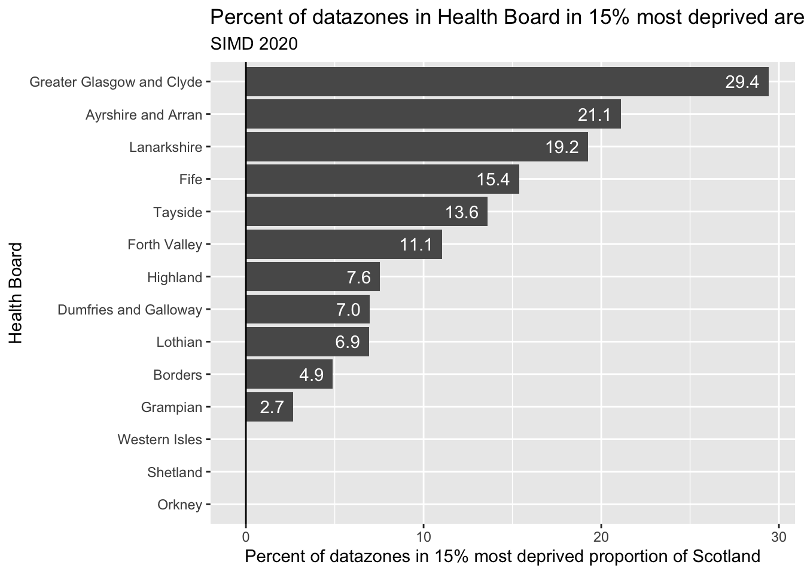

Code
library(tidyverse)
library(plotly)
library(crosstalk)
library(here)Jon Minton
November 30, 2023
Below is an example of creating a plotly chart with an interactive slider using crosstalk.
By default, the plot shows the proportion of datazones in a local authority that are in the 15% most deprived datazones in Scotland. (Using the 2020 SIMD).
The slider allows different thresholds than the 15% default to be selected.
To see the code itself, just click on the word ‘code’ to open up the block’.
if(!file.exists(here("simd_data.xlsx"))){
download.file(
url = "https://www.gov.scot/binaries/content/documents/govscot/publications/statistics/2020/01/scottish-index-of-multiple-deprivation-2020-data-zone-look-up-file/documents/scottish-index-of-multiple-deprivation-data-zone-look-up/scottish-index-of-multiple-deprivation-data-zone-look-up/govscot%3Adocument/SIMD%2B2020v2%2B-%2Bdatazone%2Blookup.xlsx",
destfile = here("simd_data.xlsx"),
mode = "wb"
)
}
dta <- openxlsx::readWorkbook(here("simd_data.xlsx"), sheet = "SIMD 2020v2 DZ lookup data")The code for the figure itself is below. It’s quite a convoluted process. There’s almost certainly neater ways of doing this. The main thing to keep in mind is all the figures exist; just only one is visible at a time.
# So let's construct a new aval containing the different x-y tuples given the threshold selected
calc_prop_deprived <- function(q, dta){
dta %>%
group_by(HBname) %>%
summarise(prop_deprived = mean(pct_rank < q)) %>%
ungroup()
}
df_rank <-
dta %>%
select(HBname, SIMD2020v2_Rank) %>%
mutate(pct_rank = SIMD2020v2_Rank / max(SIMD2020v2_Rank))
shared_df <- tibble(
dep_quants = seq(0.05, 0.95, by = 0.05)
) %>%
mutate(derived_props = map(dep_quants, calc_prop_deprived, dta = df_rank)) %>%
unnest(derived_props) %>%
mutate(undep_quants = 1 - dep_quants)
# Now to put it in the structure, and set active for `dep_quants = 0.15`
unique_dep_quants <- unique(shared_df$dep_quants)
n_steps <- length(unique_dep_quants)
dep_vals <- list()
for (step in 1:n_steps){
tmp <-
shared_df %>%
filter(dep_quants == unique_dep_quants[step]) %>%
select(HBname, prop_deprived) %>%
mutate(HBname = reorder(HBname, prop_deprived))
dep_vals[[step]] <- list(
visible = FALSE,
name = paste0('Quantile: ', unique_dep_quants[step]),
x=tmp$prop_deprived,
y=tmp$HBname
)
}
# 15% is the third list object
dep_vals[3][[1]]$visible = TRUE
# Now visualise
# create steps and plot all traces
dep_steps <- list()
fig <- plot_ly()
for (i in c(3, 1, 2, 4:n_steps)) { # Start with 3 as this is 15% and this should determine the default HB order
fig <- add_bars(fig,x=dep_vals[i][[1]]$x, y=dep_vals[i][[1]]$y, visible = dep_vals[i][[1]]$visible,
name = dep_vals[i][[1]]$name, orientation = 'h', hoverinfo = 'x+y', color = I("gray"),
showlegend = FALSE) %>%
layout(
title = list(
text = glue::glue("Proportion of datazones in Health Boards at least this deprived")
),
xaxis = list(
title = "Proportion this deprived in Health Board",
range = list(0, 1)
),
yaxis = list(
title = "Health Board"
)
)
step <- list(args = list('visible', rep(FALSE, length(dep_vals))),
method = 'restyle')
step$args[[2]][i] = TRUE
step$label = unique_dep_quants[i]
dep_steps[[i]] = step
}
#names(dep_steps) <- unique_dep_quants
fig <- fig %>%
layout(sliders = list(list(active = 2,
currentvalue = list(prefix = "Deprivation: "),
steps = dep_steps)))
figAs you can see, there’s still some work to do regarding formatting. But it works!
For comparison, here’s the same data used to produce a static plot
# Now to put it in the structure, and set active for `dep_quants = 0.15`
df_15pc <- shared_df |>
filter(between(dep_quants, 0.149, 0.151)) |>
select(-dep_quants, -undep_quants)
df_15pc |>
mutate(pct_deprived = 100 * prop_deprived) |>
ggplot(aes(y= pct_deprived, x = fct_reorder(HBname, pct_deprived))) +
geom_bar(stat = "identity") +
geom_text(
aes(
label = ifelse(df_15pc$prop_deprived > 0, sprintf("%.1f", pct_deprived), "")
),
color = "white",
hjust = 1,
nudge_y = -0.5
) +
coord_flip() +
labs(
x = "Health Board",
y = "Percent of datazones in 15% most deprived proportion of Scotland",
title = "Percent of datazones in Health Board in 15% most deprived areas of Scotland",
subtitle = "SIMD 2020"
) +
geom_hline(yintercept = 0)